Bienvenidos a nuestro sitio!
FOO FIGHTERS (1995)
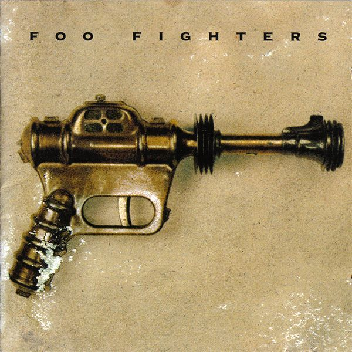1. This Is A Call
2. I'll Stick Around
3. Big Me
4. Alone + Easy Target
5. Good Grief
6. Floaty
7. Weenie Beenie
8. Oh, George
9. For All the Cows
10. X-Static
11. Wattershed
12. Exhausted

The Colour And the Shape (1997)
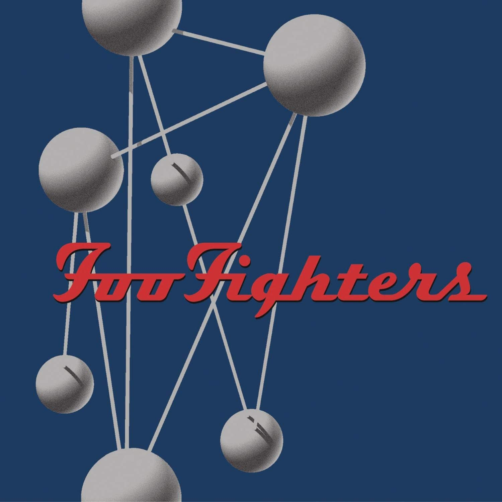1. Doll
2. Monkey Wrench
3. Hey, Jhonny Park!
4. My Poor Brain
5. Wind Up
6. Up In Arms
7. My Hero
8. See You
9. Enough Space
10. February Stars
11. Everlong
12. Walking After You
13. New Way Home
14. The Colour And the Shape
There Is Nothing Left To Lose (1999)
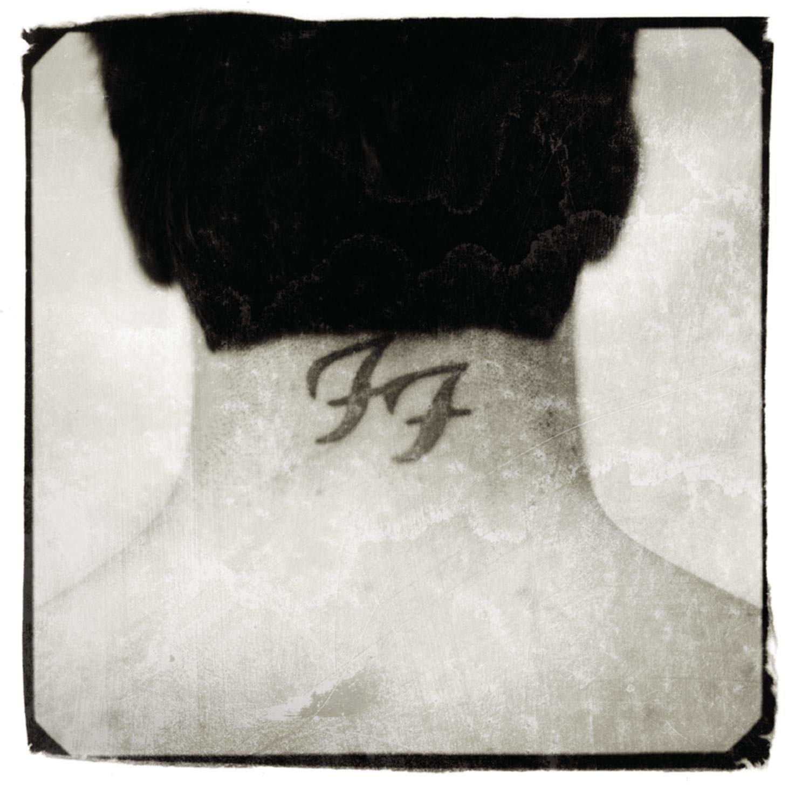1. Stacked Actors
2. Breakout
3. Learn to fly
4. Gimme Stitches
5. Generator
6. Aurora
7. Live-In Skin
8. Next Year
9. Headwires
10. Ain't It The Life
11. M.I.A
One By One (2002)
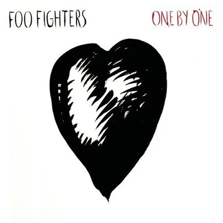1. All My Life
2. Low
3. Have it All
4. Times Like These
5. Disenchanted Lullaby
6. Tired Of You
7. Halo
8. Lonely As You
9. Overdrive
10. Burn Away
11. Come Back
In Your Honor (2005)
DISCO 1
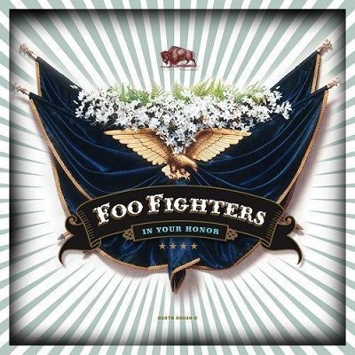1. In Your Honor
2. No Way Back
3. Best of You
4. D.O.A.
5. Hell
6. The Last Song
7. Free Me
8. Resolve
9. The Deepest Blues Are Black
10. End Over End
11. The Sign
In Your Honor (2005)
DISCO 2
1. Still
2. What If I Do
3. Miracle
4. Another Round
5. Friend of a Friend
6. Over and Ou
7. On the Mend
8. Virginia Moon
9. Cold Day in the Sun
10. Razor
Skin And Bones (2006)
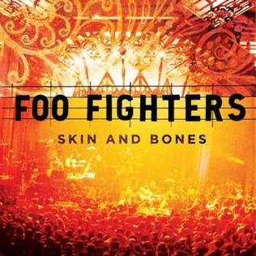1. Razor
2. Over and Out
3. Walking After You
4. Marigold
5. My Hero
6. Next Year
7. Another Round
8. Big Me
9. Cold Day in the Sun
10. Skin and Bones
11. February Starts
12. Time Like These
13. Friend of a Friend
14. Best of You
15. Everlong
Echoes, Silence, Patience & Grace (2007) 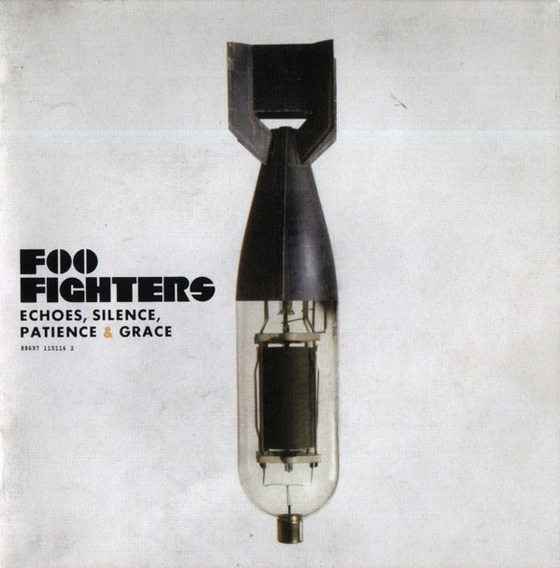
1. The Pretender
2. Let It Die
3. Erase/Replace
4. Long Road To Ruin
5. Come Alive
6. Stranger Things Have Happened
7. Cheer Up, Boys (Your Make Up Is Running)
8. Summer's End
9. Ballad Of the Beaconsfield Miners
10. Statues
11. But, Honestly
12. Home
Greatest Hits (2009)
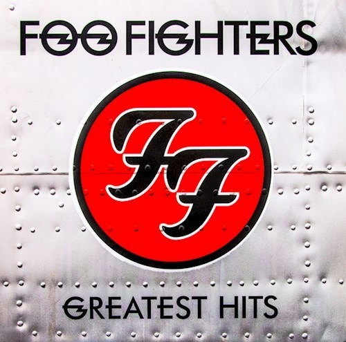1. All My Life
2. Best Of You
3. Everlong
4. The Pretender
5. My Hero
6. Learn to Fly
7. Times Like These
8. Monkey Wrench
9. Big Me
10.Breakout
11. Long Road To Ruin
12. This Is a Call
13. Skin And Bones (Live)
14. Wheels
15. Word Forward
16. Everlong - Acoustic Version
Wasting Light (2011)
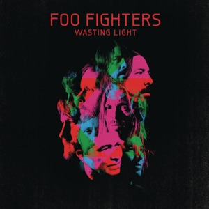1. Bridge Burning
2. Rope
3. Dear Rosemary
4. White Limo
5. Arlandria
6. These Days
7. Back & Forth
8. A Matter Of Time
9. Miss The Misery
10.I Should Have Know
11. Walk
Sonic Highways (2014)
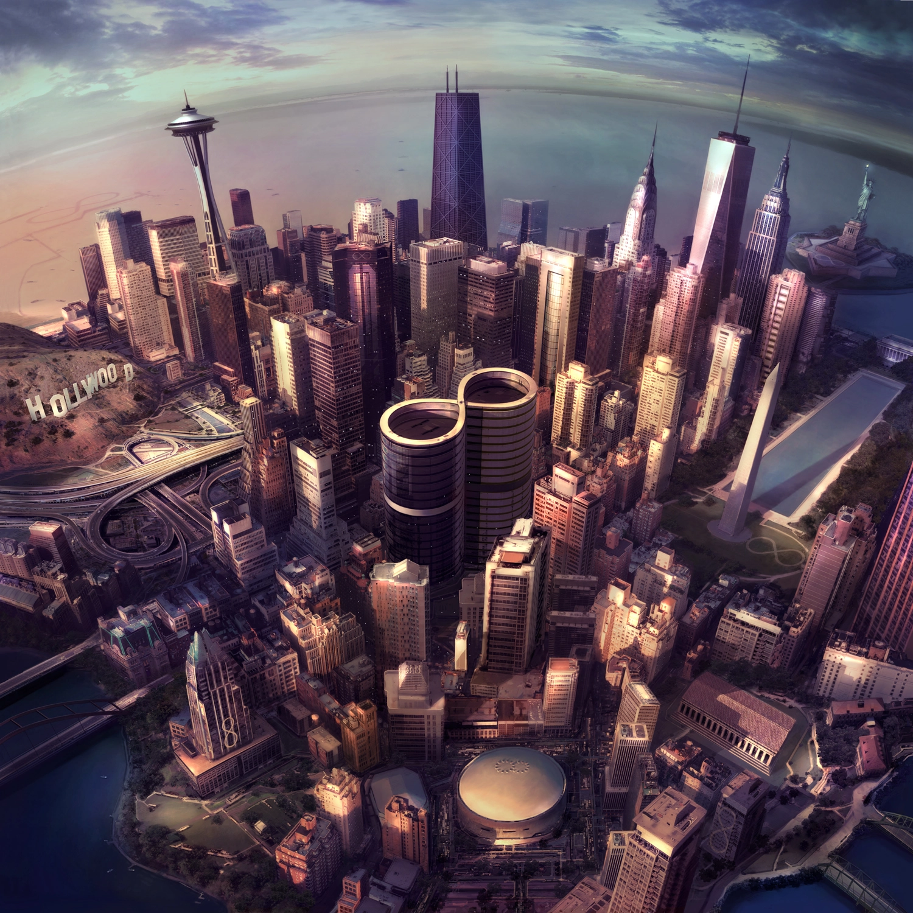1. Something from Nothing
2. The Feast and The Famine
3. Congregation
4. What Did I Do?/God As My Witness
5. Outside
6. In The Clear
7. Subterranean
8. I Am A River
Saint Cecilia EP (2015)
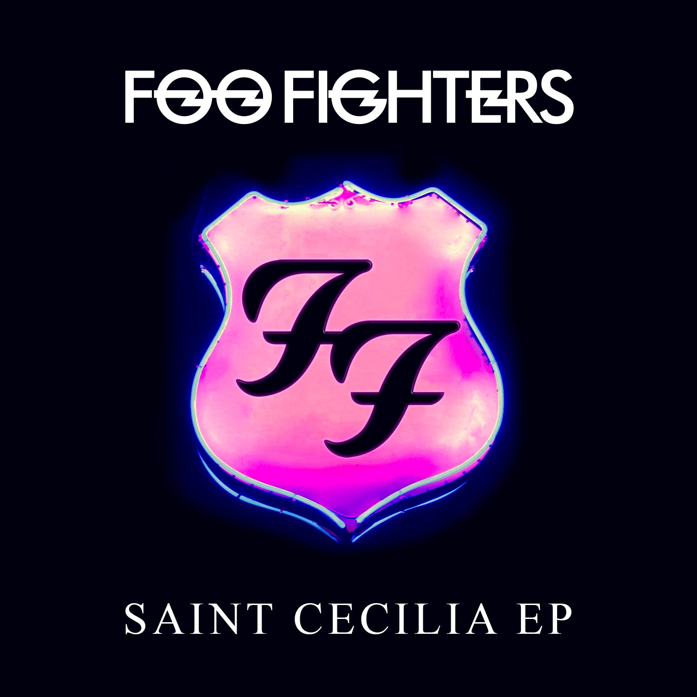1. Saint Cecilia
2. Sean
3. Savior Breath
4.Iron Rooster
5. The Neverending Sigh
Concrete And Gold (2017)
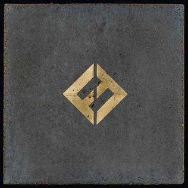1. T-Shirt
2. Run
3. Make It Right
4. The Sky Is A Neighborhood
5. La Dee Da
6. Dirty Water
7. Arrows
8. Happy Ever After (Zero Hour)
9. Sunday Rain
10.The Line
11. Concrete And Gold
Medicine At Midnight (2021)
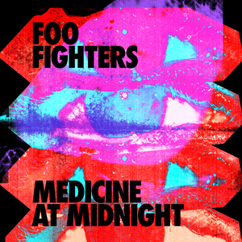1. Making A Fire
2. Shame Shame
3. Cloudspotter
4. Waiting On A War
5. Medicine At Midnight
6. No Son Of Mine
7. Holding Poison
8. Chasing Birds
9. Loves Dies Young
But Here We Are (2023)
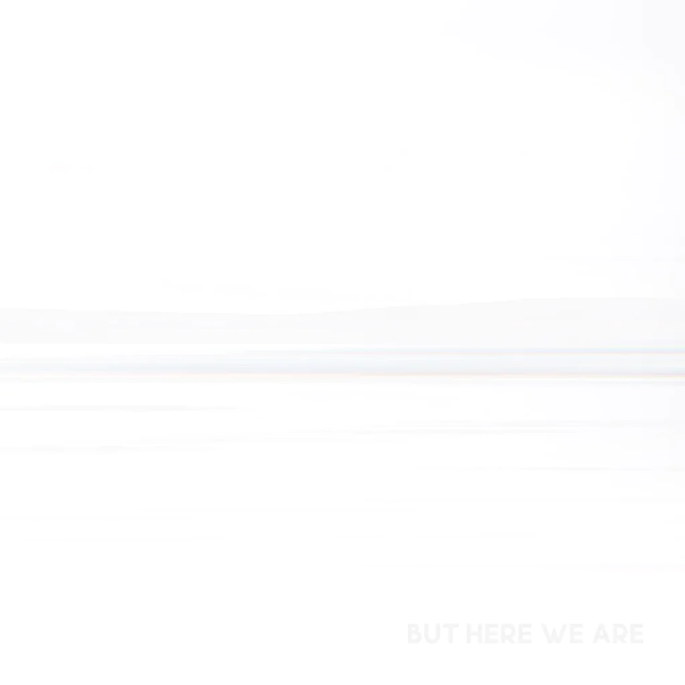1. Rescued
2. Under You
3. Hearing Voices
4. But Here We Are
5. The Glass
6. Nothing At All
7. Show Me How
8. Beyond Me
9. The Teacher
10. Rest